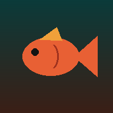

Mangrove Jack Bite TimesHourly bite score from light, tide, solunar, moon, water temp & weather, with a 7-day outlook.
Baffle Creek TidesTide times along Baffle Creek from the mouth to Essendean Bridge, plus a benchmark log for your own observations.
Add to home screen: open an app (not this page) so its icon goes straight to it.
iPhone (Safari): Share ⬆ → Add to Home Screen. Android (Chrome): ⋮ menu → Add to Home screen / Install app.
Open each app once while online. After that it opens without signal; live tide, weather and gauge data still need a connection.
iPhone (Safari): Share ⬆ → Add to Home Screen. Android (Chrome): ⋮ menu → Add to Home screen / Install app.
Open each app once while online. After that it opens without signal; live tide, weather and gauge data still need a connection.